전자기기기능장 (2010-03-28 기출문제)
1과목: 임의구분
1. 입력 잡음의 영향을 줄이기 위하여 비교기에 히스테리시스 기능을 추가한 것은?
- 특수 OTA
- 가산 증폭기
- 격리 증폭기
- 슈미트 트리거
(정답률: 81%)

2. 제어용 증폭기의 필요 특성으로 적합하지 않은 것은?
- 이득이 클 것
- 정궤환을 많이 걸 수 있을 것
- 사용조건의 변화에 대하여 안정성이 있을 것
- 신호에 포함된 주파수 성분 범위까지 주파수 특성이 좋을 것
(정답률: 91%)
3. 테이프 레코더에서 와우 플러터 현상을 가장 잘 설명한 것은?
- 테이프가 녹음기의 헤드나 캡스턴과 마찰되면서 발생되는 귀에 거슬리는 마찰음을 말함
- 테이프의 재생 중 때때로 발생되는 소리의 감소 현상
- 테이프의 겹쳐진 부분에서 녹음 신호가 서로 다른 부분으로 옮겨가 재생시 소리가 이중으로 나는 현상
- 테이프의 주행속도가 정상보다 느렸다 빨랐다 할 때 일어나는 현상
(정답률: 93%)
4. 출력전압이 넓은 주파수 범위에 걸쳐 평탄하며 음질이 좋고 잡음이 적으나 직류 전원을 필요로 하는 것은?
- 무선형 마이크로폰
- 리본형 마이크로폰
- 콘덴서 마이크로포
- 가동코일형 마이크로폰
(정답률: 88%)
5. 연산장치로 논리연산을 할 때 필요 없는 부분을 지울 때 쓰며, 일명 "mask 한다"라고 하는 논리 게이트는?
- AND
- OR
- EX-OR
- NAND
(정답률: 82%)
6. 프로토콜의 구성 요소에 속하지 않는 것은?
- 구문
- 의미
- 타이밍
- 프레임
(정답률: 97%)
7. 중앙처리장치와 주기억장치 사이의 속도 격차를 완하시켜주기 위해 많이 사용하는 것은?
- Cache Memory
- Main Memory
- Direct Memory
- Virtual Memory
(정답률: 93%)
8. f(t)=1의 라플라스 변환은?
- 1
- s
- 1/s
- 1/s2
(정답률: 85%)
9. 다음은 직렬제어형 정전압 회로의 블록도이다. 블록도의 빈 칸에 들어가야 할 명칭으로 가장 적합한 것은?
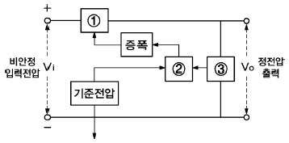
- ①: 제어소자 ②: 오차검출 ③: 샘플회로
- ①: 오차검출 ②: 샘플회로 ③: 제어소자
- ①: 샘플회로 ②: 제어소자 ③: 오차검출
- ①: 샘플회로 ②: 오차검출 ③: 제어소자
(정답률: 85%)
10. PCB Layout시의 유의사항으로 틀린 것은?
- PCB의 패턴 굵기는 허용전류를 고려하여 설계한다.
- PCB의 패턴은 가능한 짧게 설계하는 것이 좋다.
- 발진단은 방사 노이즈가 충분하도록 설계한다.
- 슬더링시 충분한 납량이 도포될 수 있도록 한다.
(정답률: 92%)
11. 불대수식 A+BㆍC와 등가인 것은?
- AㆍB(B+C)
- (A+B)ㆍA
- (A+B)(A+C)
- AㆍB(A+C)
(정답률: 88%)
12. 100[μF]의 정전용량을 가진 콘덴서에 50[Hz], 100[V]의 교류전압을 가하면 흐르는 전류는?
- 1.57[A]
- 3.14[A]
- 6.28[A]
- 7.19[A]
(정답률: 61%)
13. 같은 보빈 위에 동일한 권수로 인덕턴스 L[H]의 코일 2개를 접근해서 감고 이것을 직렬로 접속했을 때 합성 인덕턴스는? (단, 결합계수는 0.9이다.)
- 0.2L[H]
- 0.4L[H]
- 3.6L[H]
- 3.8L[H]
(정답률: 67%)
14. SRAM에 대한 설명으로 옳은 것은?
- 가격이 DRAM에 비해 싸다.
- 전력소비가 DRAM에 비해 적다.
- 주기적으로 재충전이 필요하다.
- Access 속도가 DRAM보다 빠르다.
(정답률: 84%)
15. 마이크로컴퓨터가 수행할 수 있는 기능이 아닌 것은?
- 연산 기능
- 사고 기능
- 제어 기능
- 기억 기능
(정답률: 99%)
16. 인터럽트 허용신호를 직렬로 연결하여 장치번호를 이용하여 하드웨어적으로 우선순위를 결정하는 방법은?
- 벡터
- 폴링
- 논 마스크
- 데이지 체인
(정답률: 84%)
17. 다음의 스피커에서 능률이 높고 지향성이 강하여 메가폰용으로 가장 적합한 것은?
- 혼형
- 돔형
- 콘형
- 콘덴서형
(정답률: 97%)
18. 주파수가 80[MHz]인 반송파를 4[kHz]의 신호주파수로 FM 변조시킬 때 최대주파수편이가 ±28[kHz]이면 변조지수는?
- 0.0⑤
- 7
- 14
- 200
(정답률: 57%)
19. 고주파 유전 가열에 대한 설명으로 틀린 것은?
- 금속의 표면 가열이 쉽게 이루어진다.
- 고주파 용접, 음식물의 조리 등에 응용된다.
- 전원을 끊으면 가열은 즉시 정지하여 열의 이용이 쉽다.
- 전원주파수가 높을수록 분자의 방향 전환속도가 빠르게 되어 전력소비도 증가한다.
(정답률: 84%)
20. α 차단주파수 fα가 20[MHz]인 트랜지스터를 이미터 접지로 사용할 경우 β 차단주파수 fβ는? (단, 전류증폭도 α=0.98이다.)
- 10[kHz]
- 40[kHz]
- 100[kHz]
- 400[kHz]
(정답률: 56%)
2과목: 임의구분
21. 마이크로프로세서가 데이터 등을 주고받기 위해 사용하는 버스에 속하지 않는 것은?
- 제어 버스
- 데이터 버스
- 어드레스 버스
- 레지스터 버스
(정답률: 71%)
22. 다음 회로에서 부하(RL)에 흐르는 전류는?
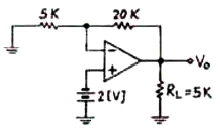
- 1.6[mA]
- 2[mA]
- 2.5[mA]
- 3[mA]
(정답률: 68%)
23. N형 반도체를 만들기 위해 사용하는 불순물이 아닌 것은?
- P
- As
- Ga
- Sb
(정답률: 66%)
24. R-L-C 공진 회로에 대한 설명 중 옳은 것은?
- 병렬공진시에 최대의 전류가 흐른다.
- 직렬공진시 전압확대비 A=R/Wl 이다.
- 직렬공진시 전류는 전압보다 위상이 늦다.
- 직렬공진시 임피던스는 최소가 된다.
(정답률: 79%)
25. 입력 A, B가 서로 다른 경우에만 1의 출력을 갖는 게이트는?
- OR
- AND
- NAND
- EX-OR
(정답률: 92%)
26. 마이크로폰에 1[μbar]의 음압을 가했을 때 출력전압이 1[mV]이면 감도는?
- -40[dB]
- -60[dB]
- -80[dB]
- -100[dB]
(정답률: 60%)
27. 절대온도 0[K]에서 진성 반도체의 가전자가 존재하는 위치는?
- 금지대
- 전도대
- 가전자대
- 억셉터 준위
(정답률: 85%)
28. 초크 입력형과 비교한 콘덴서 입력형 평활회로에 대한 설명으로 틀린 것은?
- 저가이다.
- 전압변동율이 나쁘다.
- 대전류에 적합하다.
- 첨두역전압이 높다.
(정답률: 74%)
29. 다음의 회로에서 단자 ab에 나타나는 전압 Vab는?
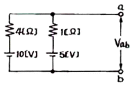
- 2[V]
- 4[V]
- 5[V]
- 6[V]
(정답률: 75%)
30. 전원과 부하가 모두 △결선된 평형 회로에서 선간 전압이 400[V], 부하 1상의 임피던스가 4+j3[Ω]인 경우 선전류는?
- 80[A]
- 80/3[A]
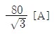
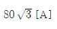
(정답률: 76%)
31. 전기적으로 연결된 두 장치에서 데이터를 교환할 때 동기를 맞추기 위해 신호를 주고받는 것은?
- 폴링
- OP 코드
- 프로토콜
- 핸드쉐이킹
(정답률: 82%)
32. R-L 직렬회로에서 t=0에서 갑자기 전압을 가할 때 전류가 0에서 정상전류의 63.2[%]에 도달하는 시간은? (단, 저항은 20[Ω]이고 인덕턴스는 1[H]이다.)
- 0.01[s]
- 0.⑤[s]
- 0.1[s]
- 0.5[s]
(정답률: 69%)
33. 수정 발진기에 대한 설명으로 틀린 것은?
- 수정 공진자의 Q는 매우 높다.
- 발진 주파수는 수정결정편의 두께에 반비례한다.
- 수정 진동자는 수정결정편의 피에조 효과를 이용한다.
- 안정한 발진을 유지할 수 있는 주파수 범위는 병렬공진 주파수보다 높고 직렬공진 주파수보다 낮다.
(정답률: 95%)
34. 어떤 호로의 피상전력이 20[kVA], 유효전력이 16[kW]일 때 이 회로의 무효율은?
- 1.0
- 0.8
- 0.6
- 0.2
(정답률: 60%)
35. 다음 회로에서 스위치를 닫았을 때 흐르는 전류가 닫기 전에 흐르던 전류의 2배가 되도록 하기 위한 저항 R의 값은?
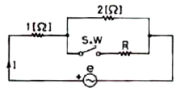
- 1/2[Ω]
- 3/2[Ω]
- 1/3[Ω]
- 2/3[Ω]
(정답률: 70%)
36. 펄스의 상승부분에서 진동의 정도를 말하며 높은 주파수 성분에 공진하기 때문에 생기는 것은?
- 새그
- 링깅
- 라운딩
- 오버슈트
(정답률: 95%)
37. 다음 중 용어의 설명이 옳지 않은 것은?
- 제어대상 : 자동제어의 대상이 되는 장치나 물체
- 제어링 : 제어대상에 속하는 양으로 제어될 수 있는 것
- 조작량 : 제어량을 조정하기 위하여 주어지는 목표값
- 목표값 : 제어계에서 목적을 이룰 수 있도록 외부에서 주어지는 값
(정답률: 70%)
38. JK 플립플롭을 다음과 같이 결선하면 어떤 플립플롭의 동작이 되는가?
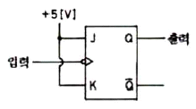
- RS 플립플롭
- RST 플립플롭
- T 플립플롭
- D 플립플롭
(정답률: 85%)
39. 마이크로프로세서의 주 구성 요소가 아닌 것은?
- 연산장치
- 레지스터부
- 제어장치
- 입출력장치
(정답률: 81%)
40. 제어계의 출력 신호와 입력 신호와의 비는?
- 전달함수
- 제어함수
- 적분함수
- 미분함수
(정답률: 90%)
3과목: 임의구분
41. 고주파 가열에서 유도 가열은 어떤 원리에 의하여 발열시키는 방식인가?
- 유전체 손
- 맴돌이 전류 손
- 히스테리시스 손
- 표피 작용에 의한 손실
(정답률: 92%)
42. 초단 증폭기의 이득이 12이고 잡음지수가 5인 증폭기 뒤에 이득이 20, 잡음지수가 7인 증폭기를 연결할 때 종합잡음지수는?
- 4.8
- 5.5
- 7.8
- 8.2
(정답률: 59%)
43. 차동증폭회로에서 차동전압 이득이 10000이고 동상전압 이득이 0.1일 때 공통성분제거비 (CMRR)는?
- 80[dB]
- 100[dB]
- 120[dB]
- 140[dB]
(정답률: 76%)
44. 초음파 응용기기에 해당되지 않는 것은?
- 소나
- 어군 탐지기
- 탐상기
- 플라즈마
(정답률: 95%)
45. 동기식 계수기의 특징으로 틀린 것은?
- 동작속도가 고속이다.
- 설계가 어렵고 불규칙적이다.
- 클록발진기가 별도로 필요하다.
- 회로가 복잡하고 주로 큰 시스템에 사용된다.
(정답률: 86%)
46. 영상처리시스템의 입력장치에 해당하지 않는 것은?
- 스캐너
- 디지털 카메라
- 비디오 카메라
- 스프트 카피
(정답률: 99%)
47. 디지털 데이터를 디지털 신호로 변환하는 전송부호(부호화)의 종류에 속하지 않는 것은?
- NRZ
- CMI
- 맨체스터
- 인터리빙
(정답률: 79%)
48. 다음 논리 회로를 논리식으로 표시하면?
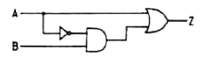
- Z=A+B
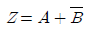
- Z=A+AB
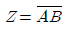
(정답률: 72%)
49. 일반적인 FET의 특성에 대한 설명으로 틀린 것은?
- 전압제어형 소자이다.
- BJT보다 입력임피던스가 높다.
- BJT 보다 이득대역폭 적이 크다.
- BJT 보다 온도변화에 따른 안정성이 높다.
(정답률: 50%)
50. 디지털 음향기기에 사용되는 플래시 메모리 보이스 칩의 특징에 대한 설명으로 틀린 것은?
- 음질이 우수하다.
- 녹음/재생이 자유롭다.
- 녹음/재생 방식은 PCM 방식이다.
- 녹음 후 전원이 없어도 장기간 보존된다.
(정답률: 80%)
51. 대부분의 하드디스크에서 데이터를 기록할 때 기록되는 최소 단위는?
- 셀
- 트랙
- 섹터
- 실린더
(정답률: 94%)
52. CPU의 동작속도를 결정하는데 가장 큰 영향을 미치는 것은?
- 명령의 구성형식
- CPU의 클록 주파수
- 제어장치의 제어방법
- 어드레스 버스의 길이
(정답률: 94%)
53. 10진수 (28)10을 8자리(Bit)의 2진수로 변환하되 2의 보수법으로 표시하면?
- 00011100
- 11100011
- 11100100
- 11100010
(정답률: 86%)
54. 무궤환시 전압증폭도가 100인 증폭회로에서 궤환률 β=0.01의 부궤환을 걸었을 때 전압 이득은? (단 log2는 0.3이다.)
- 32[dB]
- 34[dB]
- 36[dB]
- 40[dB]
(정답률: 46%)
55. 계수 규준형 샘플링 검사의 OC 곡선에서 좋은 로트를 합격시키는 확률을 뜻하는 것은? (단, α는 제1종과오, β는 제2종과오이다.)
- α
- β
- 1-α
- 1-β
(정답률: 74%)
56. 다음 중 인위적 조절이 필요한 상황에 사용될 수 있는 워크 팩터(Work Factor)의 기호가 아닌 것은?
- D
- K
- P
- S
(정답률: 78%)
57. 어떤 회사의 매출액이 80000원, 고정비가 15000원, 변동비가 40000원일 때 손익분기점 매출액은 얼마인가?
- 25000원
- 30000원
- 40000원
- 55000원
(정답률: 82%)
58. 예방보전(Preventive Maintenance)의 효과로 보기에 가장 거리가 먼 것은?
- 기계의 수리비용이 감소한다.
- 생산시스템의 신뢰도가 향상된다.
- 고장으로 인한 중단시간이 감소한다.
- 예비기계를 보유해야 할 필요성이 증가한다.
(정답률: 90%)
59. 다음 중 통계량의 기호에 속하지 않는 것은?
- σ
- R
- s
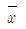
(정답률: 81%)
60. u 관리도의 관리한계선을 구하는 식으로 옳은 것은?
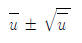
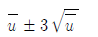
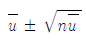
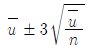
(정답률: 80%)